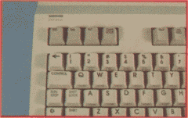
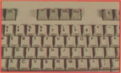
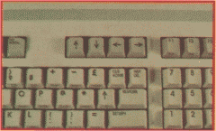

By Morton Kevelson
Last month we presented an inside view of the C-128. Starting this month we will take a closeup look at some of the specific features which make this new machine a significant improvement over its predecessors.
|  |
|  |
|  |
| Above the main keyboard of the 128 are (top) Esc, Tab, Alt, Caps Lock, (middle) Help, Line Feed, 40/80, No Scroll, and (bottom) cursor keys). |
Observant readers will also note that the main part of the keyboard is nearly an exact duplicate of the Commodore 64's. The only notable change is the relocation of the function keys to a horizontal configuration at the right of the top row. Present 64 owners should have very little trouble becoming comfortable with the C-128 layout.
Physical attributes aside, there is a lot more to the C-128 keyboard than meets the eye. Hidden beneath the tactile array, under control of the new operating system, lurks a multitude of functions designed to ease the user's sojourn into the realm of computing with the C-128.
If you have been using a VIC 20 or a C-64, you will already be familiar with a good portion of the key- board's capabilities. The full screen editor functions in the same way as these machines'. The INST/DEL key still eats characters to the left, or when shifted opens spaces to the right. The quote and insert modes still operate in the same fashion which non-Commodorists find so thoroughly befuddling. The CLR/HOME key still moves the cursor to the top left corner of the screen, or when shifted clears the entire screen. As with the C-64, text can be displayed in 16 colors, as the labels on the 1 to 8 keys indicate. These colors are still accessed by holding down the CONTROL key or the Commodore logo key. Unlike the C-64, the labels on the number keys now indicate both colors which are available for that key. As before, text display can be reversed with a CONTROL/9 and restored with a CONTROL/0.
The real power of the C-128 keyboard is in the new editing and control features which have been incorporated into the BASIC 7.0 operating system. For convenience, we have classified these features into three categories: the function keys, the ESCape key sequences, and the CONTROL key sequences. Let's take a close look at each in turn.
On power up, eight useful BASIC phrases are preassigned to the C-128 function keys. These phrases can be viewed by executing BASIC 7.0's new KEY command without any parameters. The following list should appear on the display.
KEY 1,"GRAPHIC"
KEY 2,"DLOAD"+CHR$(34)
KEY 3,"DIRECTORY"+CHR$(13)
KEY 4,"SCNCLR"+CHR$(13)
KEY 5,"DSAVE"+CHR$(34)
KEY 6,"RUN"+CHR$(13)
KEY 7,"LIST"+CHR$(13)
KEY 8,"MONITOR'+CHR$(13)
Getting this list on the screen serves two purposes. First, it reminds you what is programmed into the keys. Secondly, it gives you the opportunity to easily change the contents in any of the eight function keys. For example, if you are not planning to do any graphic programming, you may want to redefine f1. Just cursor up to the "3" in KEY 3 and change it to a "1". Hit RETURN and the directory will now be displayed by f1. Enter
KEY 3,"OPEN 4,4:CMD4"+CHR$(13)
followed by
KEY 4,"PRINT#4:CLOSE4"+CHR$(13)
and you will be all set for easy printer listing. Note how the numbers
1 through 8 which immediately follow the KEY statement refer only to
the function keys. No other keys are affected by this command.
There is one possible disadvantage to having the function keys preprogrammed. BASIC programs written for the C-64 do not expect to find a lengthy message when examining the function keys. This can be easily remedied by reprogramming all eight keys with the following:
FOR I=1 TO 8:KEY I,CHR$(I+132):NEXT
This will place the traditional (for VIC 20 and C-64 users) CHR$ codes
into the function keys. You will probably want to do this in every
program which uses the function keys to control program operation.
The C-128 has the powerful full screen editor that a veteran Commodore user will not feel at home without. This editor has been greatly enhanced with the addition of a series of ESCape key commands. The result is that the C-128 screen editor approaches the capabilities of a full blown text editor. Writing and editing BASIC programs has never been easier.
There are 21 ESCape key sequences implemented on the C-128, almost one for every letter of the alphabet. These sequences are so useful that you will probably want to become familiar with them in a hurry. The best way to become acquainted with them is just to use them while writing a program. Afterwards, if you really want to see how dependent you have become on the new features, just GO 64 and enter the same program. Be forewarned, you may be in for a frustrating experience.
Each of the ESCape sequence commands are executed by pressing and releasing the ESC key followed by the appropriate letter key. Do not hold down both keys at once. For example, pressing the ESC key followed by the "A" key places the editor in automatic insert mode. Anything you type will automatically push the remainder of the display ahead of it. This is a tremendous convenience for rearranging text between quotes or for adding temporary commands during program debugging. It is especially useful when you keep in mind that the C-128 permits entry of up to 160 characters (four 40 column lines or two 80 column lines) into a BASIC program line. Note that this is not the same as opening a gap by using the INST/DEL key. All of the keyboard control functions, such as the cursor keys and the CLR/HOME key as well as the INST/DEL key, retain their usual functions. In other words, insert mode does not place the screen editor into quote mode.
The screen parser has been enhanced in other ways as well. It will now link up to a full screen of text at one time. By comparison, the C-64 is limited to only two screen lines and the VIC 20 handles four screen lines. However, trying to enter more than 160 screen characters into a single BASIC program line results in a ?STRING TOO LONG ERROR. By comparison, exceeding the C-64's two line limit simply resets the screen linker to the next two lines. This full screen linking on the C-128 must be kept in mind when using the ESCape functions. The erase to end of line command (ESC Q) will remove all text from the current cursor position to the end of screen text or the next carriage return, whichever comes first. The erase to beginning of line command (ESC J) works analogously but in the opposite direction. The same is true of the move to end of line (ESC K) and move to beginning of line (ESC J). On the other hand, the insert a line (ESC I) command is a screen line function. Use of this command within a BASIC line opens up one screen line while maintaining the line links for BASIC editing.
All of these functions can also be obtained under program control. The following sample program illustrates some of the effects which can be easily obtained by using the ESCape sequences in PRINT statements:
10 PRINT CHR$(147):REM CLEAR SCREEN
20 CHAR,14,11,"OFF THE TOP"
30 CHAR,12,12,"DOWN THE BOTTOM"
40 CHAR,0,12
50 FOR I=0TO12
60 PRINT CHR$(27)"I"CHR$(27)"I";:REM INSERT TWO LINES
70 PRINT CHR$(27)"V";:REM MOVE SCREEN UP ONE LINE
80 NEXT
Note that CHR$(27) is the ESCape key. Several keystrokes can be saved by programming PRINT" < reverse [ > X" where the reversed left bracket is obtained by simultaneously pressing CONTROL, SHIFT, and the colon keys while in quote mode. The reverse left bracket between quotes in a BASIC statement will generate a CHR$(27). This is a useful trick to keep in mind for sending escape codes to a printer with a PRINT# statement. Note that the ESCape key commands only work when sent to the screen. If you want to see how the program works try adding the following lines:
65 SLEEP 1
75 SLEEP 1
The SLEEP command pauses program execution for the specified number of
seconds. Also note the use of the CHAR command to conveniently position
the cursor on the screen. The CHAR command is really meant to display
text on a graphic screen. In this context it is being used as a PRINT
AT command.
One of the more interesting capabilities of BASIC 7.0 is the ability to define windows. Once a window is set, all subsequent screen output is restricted to this area. Try the following program:
10 PRINT CHR$(147)
20 CHAR,10,10,CHR$(27)"T"
30 CHAR,10,10,CHR$(27)"B"
40 LIST
This will define a screen window whose upper left hand corner is at the tenth row and tenth column position. The lower right hand corner will be at twentieth row and column position. Note the use of the CHAR statement to position the cursor as well as to set the window coordinates. Also note the coordinates in the CHAR statement of line 30.
These are correct as shown. The CHAR statement references its coordinates from the upper left hand corner of the currently active screen window. Since this has been already defined by line 20, we have to take this into consideration for line 30.
To help keep track of the current screen window, BASIC 7.0 includes the RWINDOW function. The following sequence of commands:
R=RWINDOW(0)
C=RWINDOW(1)
will place the number of rows and columns into the variables R and C.
While entering a BASIC program, the window commands can be used to partition the screen into a message area and a text area. Just write yourself some notes at the top of the screen and set the screen window. Continue to enter BASIC program lines. All screen control functions, such as clear or home, will not affect the message area. To cancel a window just hit the HOME key twice.
Under program control, a window can be used to eliminate the need to continuously rePRINT a screen layout. The message area in the window can be manipulated as desired without affecting the remainder of the screen. Note that only one window can be active at any time.
A word about the scroll commands. Turning scrolling off, with an ESC M, causes the cursor to wrap from the bottom of the screen to the top of the screen. There is also a NO SCROLL key which according to the preliminary documentation is supposed to perform the same function. This is not so. We found this key to work as a pause as described below.
Turn on your C-128, hold down the CONTROL key, and press G. Surprise! If you had the volume turned up on your television or monitor, you were rewarded with a pleasant bell tone. This may not seem like much, but if I had a nickel for every time someone asked me for a simple way to make that noise on a C-64, I would have retired a wealthy man some time ago. Commodore has finally implemented the traditional teletype "bell" in the C-128 console. The same tone can be produced with a PRINT CHR$(7).
In general the CONTROL functions are not unique to the C-128. Most of them will be familiar to present users of the VIC 20 or the C-64. The C-128 does have some significant changes and additions to this keystroke sequence. Note that unlike the ESCape key sequence you have to hold down the CONTROL key while pressing the second key. Also, CONTROL key commands can be placed into PRINT statements while the screen editor is in quote mode. In contrast, pressing the ESCape key while in quote mode will activate the ESCape key sequence.
As mentioned above, a CONTROL left bracket will send an ESCape character. Try it. If the editor is not in quote mode, this key sequence will initiate the ESCape mode. This little-known key sequence will also generate a CHR$(27) on the C-64 and the VIC 20. Of course, this has no direct effect on these two machines.
The C-128 has a TAB key on its keyboard right next to the ESCape key. Pressing this key generates a CHR$(9), which moves the cursor to the next tab stop on the screen. The CONTROL I key combination will have the same effect. On the VIC 20 or the C-64, a CHR$(9) will enable the character set switch capability. On the C-128 this has been moved to CONTROL K ( CHR$(11) ). The disable-character-set-change command has also been changed to CONTROL L ( CHR$(12) ), although the old CONTROL H ( CHR$(8) ) has no unique C-128 function. Programmers accustomed to these codes on the VIC 20 or C-64 should take note.
Getting back to the tab functions, the CONTROL X ( CHR$(24) ) will set or clear a tab at the current cursor position. However, to clear all tabs you have to use the ESCape Z sequence. The best way to learn about the tab stops is just to play with them. Note that a TAB command does not wrap the cursor to the following screen line. Tabbing to the end of a line simply leaves the cursor at that position.
Another change is worth noting. The CONTROL J ( CHR$(10) ) code generates a linefeed without a carriage return. On the C-64 and VIC 20 both a linefeed and carriage return will be produced.
The remaining unique C-128 CONTROL codes are associated with the 80 column display. CONTROL B ( CHR$(2) ) turns underline on. However, there is no corresponding CONTROL sequence to turn it off. You will have to PRINT CHR$(130) to cancel underline mode. The 80 column characters can be set to flash by using a CONTROL 0 ( CHR$(15) ). As with underline mode, there is no CONTROL sequence to turn flash off. Use PRINT CHR$(143) .
| TABLE OF CONTROL KEY FUNCTIONS | ||
|---|---|---|
| CONTROL B | CHR$(2) | Turn underline on in 80 column display |
| CONTROL G | CHR$(7) | Produce bell tone |
| CONTROL H | CHR$(8) | No effect |
| CONTROL I | CHR$(9) | Move cursor to next tab stop |
| CONTROL J | CHR$(10) | Send a linefeed without a carriage return |
| CONTROL K | CHR$(11) | Enable character set change |
| CONTROL L | CHR$(12) | Disable character set change |
| CONTROL O | CHR$(15) | Turn flash on in 80 column display |
| CONTROL X | CHR$(24) | Tab set or clear |
| CONTROL [ | CHR$(27) | Send an ESCape character |
| CHR$(130) | Cancel 80 column underline | |
| CHR$(143) | Cancel 80 column flash | |
The top row of the keyboard has a total of 16 keys in groups of four. The four function keys on the right have been described above. The leftmost grouping includes the ESCape and the TAB keys as well as an ALT key and a CAPS LOCK key. The ALT key is intended for use with alternate character sets under program control. This will be a topic for future discussion. The CAPS LOCK key acts as a SHIFT key only on the letter keys. As with the SHIFT LOCK key. the CAPS LOCK key includes a mechanical latch to hold it down.
The next group starts with a HELP key. If this key is pressed immediately after a BASIC program error, the offending BASIC line will be displayed. Starting with the point in the line at which the error occurred, the remainder of the line will he displayed in reverse on the 40 column display and underlined on the 8O column display.
The LINE FEED key moves the cursor down without a carriage return. This is the same as the CONTROL J ( CHR$(10) ) described above. The 40/80 DISPLAY key is another mechanically latched button. It determines the display mode on power up or when the reset hutton is depressed. Latching it down defaults to the 80 column display. It has no effect once the computer is up and running. The NO SCROLL key acts as a pause hutton. It comes in handy for freezing a program or directory listing in its tracks. Hitting a key a second time restarts the listing. In a similar fashion, it also pauses program execution.
The next group consists of four independent cursor keys. These duplicate the operation of the cursor keys at the bottom of the keyboard. The notable exception is that it is not necessary to SHIFT for a cursor up or a cursor right. I found that I have grown so accustomed to the old cursor keys that I almost never used the new ones. Perhaps the need to reach to the top of the keyboard discourages their use.
Finally, a 14-key numeric keypad duplicates the function of the number, plus, minus, period/decimal point, and RETURN/ENTER keys. The numeric keypad and the four independent cursor keys are electrically different from the number keys and the cursor keys on the Commodore 64 subset of the keyboard. Although they return the same CHR$ code with a GET statement, it is possible to distinguish them by PEEKing an appropriate location. (See sidebar on page 52 for details.)
This hardware separation of the keypad from the rest of the keyboard is a minor disappointment to C-64 upgraders. If the keypad had been kept electrically identical to the number keys on the keyboard it would have been usable in C-64 mode as well. This would have allowed the use of all existing Commodore 64 programs with the numeric keypad. Keeping the keypad compatible could have been easily accomplished by simply paralleling the existing contacts. Actually, this would have been cheaper to implement than the scheme used. Apparently, Commodore felt the extra flexibility offered by the electrical separation was worth the extra effort.
Tucked away on the right side of the C-128. next to the on/off switch. is a small square push hutton. It is mounted flush with the surface. making accidental activation unlikely. This is a true hardware reset button. Pressed on its own, it will bring the C-128 back to its initial power up state in the current mode. In conjunction with the Commodore logo key, it will force a reset to C-64 mode. 1f the RUN/STOP key is held down, the C-128 will come up in the machine language monitor with the current BASIC program in memory intact!
| ESC | 72 | 7 | 24 | RESTORE | -- | N | 39 |
| TAB | 67 | 8 | 27 | RUN/STOP | 63 | M | 36 |
| ALT | -- | 9 | 32 | SHIFT LOCK | -- | < | 47 |
| CAPS LOCK | -- | 0 | 35 | A | 10 | > | 44 |
| HELP | 64 | + | 40 | S | 13 | ? | 55 |
| LINE FEED | 75 | - | 43 | D | 18 | SHIFT (RIGHT) | -- |
| 40/80 | -- | (pound) | 48 | F | 21 | CRSR UP/DOWN | 7 |
| NO SCROLL | 87 | CLR/HOME | 51 | G | 26 | CRSR LEFT/RIGHT | 2 |
| CRSR UP | 83 | INST/DEL | 0 | H | 29 | KEYPAD | |
| CRSR DOWN | 84 | CTRL | -- | J | 34 | 7 | 70 |
| CRSR LEFT | 85 | Q | 62 | K | 37 | 8 | 65 |
| CRSR RIGHT | 86 | W | 9 | L | 42 | 9 | 78 |
| F1 | 4 | E | 14 | [ | 45 | + | 73 |
| F3 | 5 | R | 17 | ] | 50 | 4 | 69 |
| F5 | 6 | T | 22 | = | 53 | 5 | 66 |
| F7 | 3 | Y | 25 | RETURN | 1 | 6 | 77 |
| LEFT ARROW | 57 | U | 30 | COMMODORE | -- | -- | 74 |
| 1 | 56 | I | 33 | SHIFT(LEFT) | -- | 1 | 71 |
| 2 | 59 | O | 38 | Z | 12 | 2 | 68 |
| 3 | 8 | P | 41 | X | 23 | 3 | 79 |
| 4 | 11 | @ | 46 | C | 20 | 0 | 81 |
| 5 | 16 | * | 49 | V | 31 | . | 82 |
| 6 | 19 | UP ARROW | 54 | B | 28 | ENTER | 76 |
| The table (at left) shows the values generated in location 212 by the keys of the C-128 keyboard. (See C-128 Keyboard Distinctions below for explanation.) | |||||||
|---|---|---|---|---|---|---|---|
The C-128 sports numeric keypad which should greatly speed up data entry in numerically intensive applications, most notably spreadsheets. These keys, as well as the discrete cursor keys, duplicate existing keys on the main keyboard. There are applications where a numeric keypad may be of little or no interest. Instead, various program control functions could be assigned to the new keys.
For such applications it would be desirable to distinguish the keypad from the number keys on the main keyboard. The traditional ASCII code check following a GET will not work, since the same ASCII code wi1l be returned by the corresponding keys. For example, pressing a "1" on the keyboard or keypad returns an ASCII value of 49. Fortunately, there is a simple way for BASIC to distinguish which physical key has been pressed.
Locations 211 and 212 are used by the operating system for this purpose. The values stored here every sixtieth of a second are unique for every key. At address 211 the SHIFT, Commodore logo, and CONTROL keys are identified. These keys will set bits zero, one, and two respectively at this address. If you PRINT PEEK(211) a zero will normally be returned. The SHIFT key changes this to a one. The logo key returns a two and the CONTROL key results in a four. These values are additive, so holding all three keys down gives a seven.
The remainder of the keys, with the exception of the RUN/STOP, RESTORE, ALT, and 40/80 keys, place a unique value in address 212 when pressed. On the C-128 this location contains an 88 when no key is pressed. Press any other valid key and a value between 0 and 87 will appear. The table above shows the values generated in location 212 by the keys on the C-128 keyboard. The following program can be used to reproduce these results:
10 DO:GETKEY A$
20 PRINT ASC(A$);PEEK(212)
30 LOOP
The same program in BASIC 2.0 on the C-64 or VIC 20 would be:
10 GET A$:IFA$=""THEN10
20 PRINT ASC(A$);PEEK(203)
30 GOTO 10
Note the change in the PEEKed address. The operating systems on all Commodore machines have many similarities. Addresses 203 and 653 on the VIC 20 and the C-64 are equivalent to 212 and 211 on the C-128. The values in 203 for the C-64 will be the same for the corresponding keys in 212 on the C-128. However, the results on the VIC 20 are quite different. The shift flag values are the same for all three computers. You may want to use the KEY statement on the C-128 to clear the function keys before RUNning this program, or strange things may result.
Published in Ahoy!, Issue 21, September 1985. Copyright © 1985 Ion International, Inc.
| This page has been created by Sami Rautiainen. | |
| Read the small print. | Last updated September 05, 2020. |